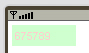
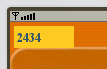

| LWUIT Developer’s Guide |
| C H A P T E R 15 |
LWUIT is designed to be as extensible and modular as possible. A developer can replace or extend almost every component within LWUIT (as of this writing none of the LWUIT components are defined as final). In the spirit of Swing, a third‐party developer can write an LWUIT component from scratch by implementing painting and event handling.
Furthermore, thanks to the composite pattern used by LWUIT (and Swing with AWT), small custom and preexisting components can be combined to form a single component.
The composite approach is mentioned in Chapter 2. This chapter focuses on writing a component from scratch and plugging it into the LWUIT features such as the theme engine, painters, etcetera. This chapter discusses direct derivation from the Component, but you can derive from any existing LWUIT component to produce similar results. For example, ComboBox derives from List, Button from Label, CheckBox from Button, Dialog from Form, and so forth.
Writing a custom component should be immediately familiar to Swing/AWT developers. The following example derives from Component and overrides paint in order to draw on the screen:
public class MyComponent extends Component {
public void paint(Graphics g) {
g.setColor(0xffffff);
g.fillRect(getX(), getY(), getWidth(), getHeight());
g.setColor(0);
g.drawString("Hello World", getX(), getY());
}
}
|
This component writes Hello World in black text on a white background. To show it we can use the following code, resulting in FIGURE 15-1. As mentioned earlier, you can also derive from an appropriate subclass of Component; overriding paint is optional.
Form testForm = new Form(); testForm.setLayout(new BorderLayout()); testForm.addComponent(BorderLayout.CENTER, new MyComponent()); testForm.show(); |
Notice several interesting things that might not be obvious in the example:
Setting the color ignores the alpha component of the color. All colors are presumed to be opaque RGB colors.
The rectangle is filled and the text is drawn in the X coordinate of the component. Unlike Swing, which “translates” for every component coordinate, LWUIT only translates to the parent container’s coordinates, so it is necessary to draw in the right X/Y position (rather than 0,0) because the component position might not be the same as the parent’s. For example, to draw a point a the top left of the component, you must draw it from getX() and getY().
In most cases the example above won't work properly because the layout manager doesn't “know” how much space to allocate. To fix this you must define a preferred size.
A preferred size is the size which the component requests from the layout manager. It might take more (or less) but the size should be sufficient to support rendering. The preferred size is calculated based on images used and font sizes used. The component developer (or look and feel author) is responsible for calculating the proper size.
The calcPreferredSize() method is invoked when laying out the component initially (and later when changing themes). It allows you to determine the size you want for the component as follows:
protected Dimension calcPreferredSize() {
Font fnt = Font.getDefaultFont();
int width = fnt.stringWidth(“99999-9999”)
int height = fnt.getHeight();
return new Dimension(width, height);
}
|
Unlike Swing/AWT, LWUIT doesn't have minimum or maximum size methods, thus your job as a component developer is simpler. Components grow based on the layout manager choices rather than component developer choices
This example uses a hardcoded text for sizing rather than the input string, so the component won't constantly resize itself in the layout as the user inputs characters.
After making these changes you no longer need to use the border layout to place the component and it now occupies the correct size, so you can show the component using the following code (default layout if FlowLayout):
Form testForm = new Form(); testForm.addComponent(new MyComponent()); testForm.show(); |
So far the component doesn't have any interactivity or react to user events. To improve the component, we can build a simple input area that accepts only numeric values (for simplicity’s sake we do not support cursor navigation).
Event handling in LWUIT is very similar to MIDP event handling (which is designed for small devices) in which we receive the calls from the platform in methods of the subclass. To accept user key presses, override the appropriate key released method as follows:
public void keyReleased(int keyCode) {
if(keyCode >= '0' && keyCode <= '9') {
char c = (char)keyCode;
inputString += c;
repaint();
}
}
|
Note, it is an LWUIT convention to place actions in the key released event rather than the key press event (except for special cases). This is important from a UI perspective, because navigation triggered by a key press event might send the key release event to a new form, causing odd behavior.
If you run the event handing code above, you can see the event never actually occurs. This is because the component must accept focus in order to handle events. By default, components are not focusable and you must activate focus support as follows:
setFocusable(true); |
Once activated, focus works as you would expect and the behavior is correct. It makes sense to detect focus within the paint(Graphics) method (or paintBorder) and draw the component differently in order to visually indicate to the user that focus has reached the given component.
This section discuss painting the component with regard to styles and focus. To understand styling and proper painting process it’s necessary to understand the basics of how painting occurs in LWUIT.
Painting operations are performed in order by the rendering pipeline, and all painting is performed in order on the event dispatch thread (EDT):
First the background is painted using the appropriate painter (see the background painters section). This makes sure the background is properly “cleared” to draw.
The paint method is invoked with the coordinates translated to its parent container.
The paintBorder method is invoked with the same translation.
Both paint and paintBorder delegate their work to the LookAndFeel and Border classes respectively to decouple the drawing code. For example, Button's paint method looks something like this:
public void paint(Graphics g) {
UIManager.getInstance().getLookAndFeel().drawButton(g, this);
}
|
Paint border from component defaults to a reasonable value as well:
Border b = getBorder();
if(b != null){
g.setColor(getStyle().getFgColor());
b.paint(g, this);
}
|
In the beginning we painted the component using simple drawing methods, completely disregarding the style. While this is perfectly legal it fails to take advantage of LWUIT's theming functionality.
The “right way” to paint in LWUIT regards the Style object and ideally delegates work to the LookAndFeel class. Notice that you can subclass DefaultLookAndFeel and add any method you want, such as paintMyComponent(). This allows you to implement component painting “correctly” within the look and feel. However, for custom‐made components this might not be the best approach since it blocks other third parties from using your components if they have already created a look and feel of their own.
For simplicity, this example does all the painting within the component itself.
To paint the input component correctly, implement the paint method as follows:
public void paint(Graphics g) {
UIManager.getInstance().getLookAndFeel().setFG(g, this);
Style style = getStyle();
g.drawString(inputString,
getX() + style.getPadding(LEFT),
getY() + style.getPadding(TOP));
}
|
There are several things of interest in the code above:
setFG sets the foreground color and font based on the state of the component (enabled, hasFocus).
Style padding positions the text. Notice it ignores the margins, which are already in the translated coordinates of the paint (margins work without any change in the code).
There’s no need to paint the background, draw a border or check for focus. These things are all handled implicitly by LWUIT!
This isn't enough though, the implementation of calcPreferredSize must take all of these things into account, including the possibility of user installed fonts.
protected Dimension calcPreferredSize() {
Style style = getStyle();
Font fnt = style.getFont();
int width = fnt.stringWidth(inputString);
int height = fnt.getHeight();
height += style.getPadding(Component.TOP) + style.getPadding(Component.BOTTOM);
width += style.getPadding(Component.LEFT) + style.getPadding(Component.RIGHT);
return new Dimension(width, height);
}
|
With these two things in order our component is functional and works with the existing theme!
If we change the theme to the Java theme from the UI demo, the same code produces FIGURE 15-3.
However, there is one last thing for styles to work correctly. Currently the component uses the default color scheme and font and doesn't allow the designer to specify a style specific to this component. To allow this functionality you must allow the component to be identified in the theme editor, even in obfuscated code and in case of subclasses. To do this, override getUIID() and return the name you want for the component:
public String getUIID() {
return “NumericInput”;
}
|
This allows a designer to specify NumericInput within the Theme Creator's theme builder (in the Component combo box) in order to customize this component. Note, currently the Theme Creator doesn't support previews for custom-built components.
Up until now we’ve assumed that LWUIT takes care of the background handling for us. However, it is important to understand how this works, otherwise performance might be impacted.
The background of a component is managed by a Painter (see the API documentation for Painter for further details). A Painter can draw any arbitrary graphics in the background and can be translucent or opaque. LWUIT creates painters implicitly based on background image or color in the style. Furthermore you can customize them either by creating your own special painter or by manipulating the style.
Since a painter can be translucent or transparent LWUIT recurses to the top‐most component, starts drawing its painter, then recurses down the paint hierarchy until the background is properly drawn. If your component is completely opaque (a square that draws all of its data) this extra work is redundant. To improve performance, define background transparency (in the style) to be 255 (0xff). This indicates your background is opaque.
Painters are designed for general pluggability. They work with your customized component without any effort on your part.
We briefly discussed the animation framework in Animation. However, with a custom component the features are far more powerful.
First you must register the component as interested in animation. You cannot perform this registration during construction since there is no parent form at this stage. The component has an initComponent method that is guaranteed to invoke before the component is visible to the user and after the parent form is available.
protected void initComponent() {
getComponentForm().registerAnimated(this);
}
|
The code above registers the animation, essentially triggering the animate method. The animate method can change the state of the component and optionally trigger a repaint when it returns true.
It is relatively easily to implement a “blinking cursor“ using the animate method:
private boolean drawCursor = true;
private long time = System.currentTimeMillis();
public boolean animate() {
boolean ani = super.animate();
long currentTime = System.currentTimeMillis();
if(drawCursor) {
if((currentTime - time) > 800) {
time = currentTime;
drawCursor = false;
return true;
}
} else {
if((currentTime - time) > 200) {
time = currentTime;
drawCursor = true;
return true;
}
}
return ani;
}
|
Notice that all this code really does is change the drawCursor state in which case it returns true, indicating the need for a repaint. Now implementing a cursor within our paint method requires only the following lines:
public void paint(Graphics g) {
UIManager.getInstance().getLookAndFeel().setFG(g, this);
Style style = getStyle();
g.drawString(inputString, getX() + style.getPadding(LEFT),
getY() + style.getPadding(TOP));
if(drawCursor) {
int w = style.getFont().stringWidth(inputString);
int cursorX = getX() + style.getPadding(LEFT) + w;
int cursorY = getY() + style.getPadding(TOP);
int cursorY = getY() + style.getPadding(TOP);
}
}
|
EXAMPLE 15-1 shows the MIDlet Code with a theme.
EXAMPLE 15-2 shows the component code.
| LWUIT Developer’s Guide | 12-11-09 |
Copyright © 2009, Sun Microsystems, Inc. All rights reserved.